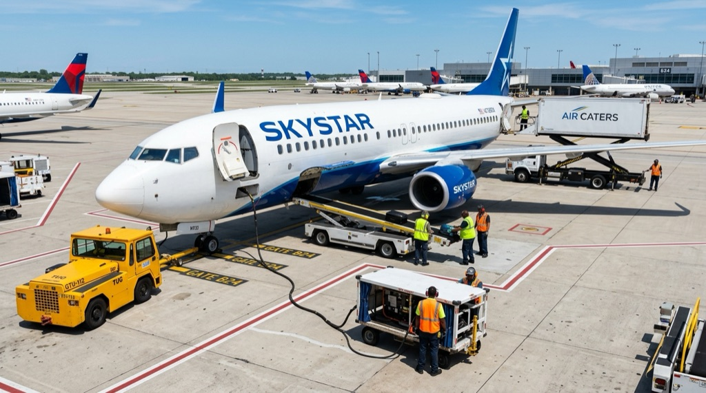

Faculty Presentation • Phil PARRIS (LH/LAN) Présentation Pédagogique • Phil PARRIS (LH/LAN)
A Modern, Communicative, and Career-Aligned Learning Portal Un portail d'apprentissage moderne, communicatif et ancré dans les réalités professionnelles
Presented by Phil PARRIS — Professeur Référent GSEA, Département LH / LAN Présenté par Phil PARRIS — Professeur Référent GSEA, Département LH / LAN
A comprehensive pedagogical modernisation for future TSEEAC professionals, starting Week 44 of 2026. Preserving the weekly rhythm while completely renewing texts, technical vocabulary, viewing media, and communicative classroom tasks. Semester 1 serves as our foundation, with Semesters 2, 3, and 4 being updated progressively throughout the year. Une modernisation pédagogique globale pour les futurs techniciens TSEEAC, déployée dès la semaine 44 de 2026. Maintien du rythme hebdomadaire avec un renouvellement complet des supports, du vocabulaire métier, des médias et des mises en situation orales. Le Semestre 1 pose les fondations, les Semestres 2, 3 et 4 étant actualisés progressivement au fil de l'année.
The 2026/7 overhaul directly aligns teaching materials with real student career needs and national educational mandates through three core pillars: La refonte 2026/2027 aligne directement les contenus sur les besoins métier des étudiants et les orientations nationales selon trois piliers :
General English themes are fully matched with national Sustainable Development & Social Responsibility mandates. Students discuss green policy, climate resilience, and modern governance in simple, clear English. Les thèmes d'anglais général s'inscrivent pleinement dans les référentiels nationaux de Développement Durable et Responsabilité Sociétale. Les étudiants débattent de transition écologique, de résilience climatique et de gouvernance en anglais clair et accessible.
Direct integration of qualitative findings from 35 interviews with operational TSEEAC professionals across airfields throughout France, ensuring course content mirrors genuine workplace communication. Intégration directe des conclusions issues de 35 entretiens qualitatifs menés auprès de professionnels TSEEAC en poste sur les aérodromes français, garantissant des situations de communication fidèles aux réalités du terrain.
Our primary mission is teaching English, not technical aviation theory. We help students actively build their vocabulary, conversational fluency, and personal confidence so they can communicate effectively in their future workplace. Notre objectif prioritaire est l'apprentissage de la langue anglaise, et non l'enseignement théorique aéronautique. Nous accompagnons les étudiants pour enrichir leur vocabulaire actif, développer leur aisance conversationnelle et renforcer leur confiance en situation professionnelle.
GSEA students attend 4 hours of face-to-face English each week, supported by structured autonomous study: Les étudiants GSEA suivent 4 heures d'anglais en présentiel par semaine, complétées par un travail autonome guidé :

Building spoken conversational fluidity, debate skills, and contemporary socio-technical vocabulary: Développer la spontanéité orale, l'argumentation en débat et le vocabulaire contemporain :
Evolution of transport, mass over-tourism, and sustainable eco-tourism. Évolution des transports, surtourisme de masse et écotourisme durable.
Extreme weather events, sustainable cities, and biodiversity in airports. Événements météo extrêmes, villes durables et biodiversité aéroportuaire.
Artificial intelligence, future of travel, biometrics, and debate techniques. Intelligence artificielle, avenir des mobilités, biométrie et techniques de débat.
Phonology spot-checks, functional grammar review, and final formative oral tutorial. Points réguliers de phonologie, grammaire communicative et tutorat oral bilan.
Practical airport vocabulary for maintenance and airside coordination derived from Blagnac TSEEAC interviews: Vocabulaire aéroportuaire pratique issu des entretiens avec les TSEEAC de Toulouse-Blagnac :
Airside/landside zones, ground handling teams, turnaround, and runway markings. Zones côté ville et côté piste, assistance en escale, traitement avion et balisage.
Fuselage, wings, empennage, landing gear, engines, and principles of lift. Fuselage, voilure, empennage, train d'atterrissage, moteurs et portance.
Foreign Object Debris (FOD), ramp hazards, bird strikes, and weather vocabulary. Débris sur piste (FOD), dangers en aire de trafic, péril aviaire et météo opérationnelle.
Consolidated operational vocabulary spot-check, incident handover, and review test. Bilan de vocabulaire opérationnel, relève de poste et test récapitulatif.
Replacing high-stakes written exams with continuous formative tracking, peer interaction, and structured feedback: Remplacement des examens écrits ponctuels par un suivi formatif continu, des interactions orales et des retours réguliers :
Evaluated on active participation in speaking tasks, role-play debates, proper use of vocabulary, and consistent classroom engagement. Évaluation basée sur la participation active aux tâches orales, aux jeux de rôle, l'emploi du vocabulaire adapté et l'implication en classe.
Personal self-reflection log completed after each session to record key vocabulary learnt, review operational tasks, and set communication targets with 1-click PDF export. Bilan réflexif personnel après chaque séance pour consigner le vocabulaire clé, récapituler les tâches opérationnelles et fixer ses objectifs de communication (export PDF en 1 clic).
Dedicated 30-minute oral tutorials at the end of each module with alternating pairs and trios to evaluate communicative fluency and vocabulary in context. Tutorats oraux de 30 minutes en fin de chaque module en binômes et trinômes tournants pour évaluer l'aisance communicative et le vocabulaire en contexte.
A short consolidated in-class vocabulary and concept review test verifying that all essential terms are mastered for the final GO / NO GO decision. Court test récapitulatif de vocabulaire et de concepts en classe vérifiant la maîtrise des termes essentiels pour la décision finale GO / NO GO.
A unified single-window interface replacing fragmented textbooks, loose photocopies, and scattered web links: Une interface unique et épurée remplaçant les manuels fragmentés, les polycopiés volants et les liens dispersés :
Side-by-side access to AT and AG modules. Each lesson card integrates authentic reading dossiers, technical diagrams, interactive vocabulary spot-checks, and simulation briefs. Accès direct aux modules d'anglais technique (AT) et général (AG). Chaque carte intègre dossiers de lecture authentiques, schémas techniques, auto-évaluations interactives et fiches de simulation.
Built-in video links, pronunciation tips, study materials, TOEIC preparation guides, DDRS green initiatives, and cultural English immersion hubs. Liens vidéo intégrés, repères de prononciation, fiches de révision, guides de préparation TOEIC, initiatives DD&RS et immersion culturelle anglophone.
Personal self-reflection log after each class to record key technical vocabulary learnt, summarize operations reviews, and set communication targets with 1-click PDF export. Bilan personnel après chaque cours consignant le vocabulaire technique clé, synthétisant les retours opérationnels et fixant les objectifs de communication (export PDF en 1 clic).
How real classroom needs shaped this platform through teacher direction and AI assistance: Comment les besoins réels de la classe ont façonné cette plateforme grâce au pilotage pédagogique et à l'IA :
I started with a simple paper sketch of the ideal student learning hub, designed from the ground up to eliminate cluttered Moodle scrolling, lost attachments, and static PDF links. Je suis parti d'un simple croquis papier du portail d'apprentissage idéal, conçu pour éliminer le défilement lourd sur Moodle, la perte de pièces jointes et les liens PDF statiques.
I investigated various display options within eCampus and chose SCORM 1.2: an interactive, self-contained mini-app running seamlessly inside Moodle with automatic progress tracking. J'ai exploré plusieurs modes d'affichage sur eCampus et retenu le SCORM 1.2 : une mini-application autonome et interactive s'intégrant parfaitement dans Moodle avec suivi automatique de progression.
I avoided heavy, fragile web frameworks (React, Angular, bulky runtimes). I chose native HTML5, modern vanilla JavaScript, and Tailwind CSS for extreme lightness (< 7 MB) and long-term durability. J'ai évité les frameworks lourds et fragiles (React, Angular, bibliothèques encombrantes). J'ai choisi HTML5 natif, JavaScript standard et Tailwind CSS pour une légèreté extrême (< 7 Mo) et une pérennité maximale.
I worked with advanced AI tools (Gemini) to build and refine the codebase, iterating rapidly through focused steps and rigorous testing to ensure a rock-solid, reliable architecture. J'ai collaboré avec des outils d'IA avancés (Gemini) pour développer et affiner le code, en itérant rapidement étape par étape avec des tests rigoureux pour garantir une architecture solide et fiable.
Faculty and course administration integrated directly inside Card 07: L'administration pédagogique et le suivi de promotion intégrés directement dans la Carte 07 :
Instant visibility into Group A and Group B rosters, teacher assignments (Tracy Neill, Ally Hewett, Geri Middleton, Penny Wright), and schedules (Wednesdays 13h15 / Fridays 08h00). Visibilité immédiate sur les listes des Groupes A et B, l'attribution des enseignants (Tracy Neill, Ally Hewett, Geri Middleton, Penny Wright) et les créneaux (mercredis 13h15 / vendredis 08h00).
Four 30-minute evaluation slots per 2-hour session accommodate 100% of the cohort with zero scheduling overflow, allowing inspectors of studies and teachers to monitor timings seamlessly. Quatre créneaux de 30 minutes par séance de 2 heures couvrant 100 % de la promotion sans débordement, permettant aux inspecteurs des études et aux enseignants de suivre les horaires avec précision.
Alternating pairs and trios across FE1, FE2, and FE3 ensure students practice speaking with diverse peers. Published rubrics remove test anxiety and ensure objective scoring. L'alternance de binômes et trinômes sur les EF1, EF2 et EF3 assure aux étudiants de varier leurs interlocuteurs. Les grilles publiées à l'avance éliminent l'appréhension et garantissent une évaluation objective.
Practicing what we teach: Direct alignment with ENAC's DD&RS institutional environmental commitments: Mise en pratique directe des engagements environnementaux et de la démarche DD&RS de l'ENAC :
19 students × 15 weeks × 2 courses × 3–4 pages of photocopies = ~2,000 sheets saved per cohort through interactive digital worksheets, online rubrics, and digital portfolios. 19 étudiants × 15 semaines × 2 cours × 3 à 4 pages de photocopies = ~2 000 feuilles économisées par promotion grâce aux fiches interactives, grilles en ligne et portfolios numériques.
The entire course portal—including all offline MP3 audio and SVG vector blueprints—is under 7 MB. Smaller than a typical PowerPoint file, running smoothly on low-power devices. L'intégralité du portail de cours — y compris les fichiers audio MP3 hors-ligne et les schémas vectoriels SVG — pèse moins de 7 Mo. Plus léger qu'un diaporama PowerPoint classique, fluide sur tout équipement.
Runs entirely in client browser memory. No heavy cloud database queries, no streaming video servers, and near-zero carbon footprint during daily classroom teaching. Fonctionne entièrement dans la mémoire du navigateur de l'étudiant. Aucune requête serveur lourde en base de données, pas de streaming vidéo, et une empreinte carbone quasi-nulle au quotidien.
Addressing core institutional risks with zero-compromise technical protections: Réponse aux risques institutionnels majeurs grâce à des garanties techniques sans compromis :
GRPA001–GRPB009).
• Codebase Git 100 % anonymisée (étudiants identifiés exclusivement par GRPA001–GRPB009).
students.private.json).
• Les identités réelles sont stockées uniquement dans un fichier local privé non versionné (students.private.json).
Guaranteed teaching continuity during campus outages, scaling across the full 2-year cycle: Garantie de continuité pédagogique en cas de panne réseau, déployée sur le cycle complet de 2 ans :
index.html from a USB key. Runs 100% offline with zero external CDNs.
• Niveau 1 (Clé USB Directe) : Lancement de index.html depuis une clé USB. 100 % hors-ligne sans aucun CDN externe.
Transparent measurement of the computing power and carbon emissions consumed during the 4-week Antigravity agentic development sprint: Mesure transparente de la consommation électrique et des émissions carbone générées lors du sprint de développement IA de 4 semaines :
Driving an average petrol-powered passenger car. Trajet moyen en voiture thermique standard.
Streaming high-definition video on a laptop or smart TV. Visionnage de vidéo HD sur ordinateur ou TV.
Boiling a standard 2,000W kitchen kettle to 100°C. Porter de l'eau à ébullition dans une bouilloire 2 000 W.
Presented by Phil PARRIS — Professeur Référent GSEA, Département LH / LAN. A comprehensive pedagogical modernisation for future TSEEAC professionals, starting Week 44 of 2026. Preserving the weekly rhythm while completely renewing texts, technical vocabulary, viewing media, and communicative classroom tasks. Semester 1 serves as our foundation, with Semesters 2, 3, and 4 being updated progressively throughout the year. Présenté par Phil PARRIS — Professeur Référent GSEA, Département LH / LAN. Une modernisation pédagogique globale pour les futurs techniciens de l'aviation civile (TSEEAC), dès la Semaine 44 de 2026. Le rythme hebdomadaire est maintenu tout en renouvelant intégralement les supports écrits, le lexique technique, les supports vidéo et les tâches orales communicatives. Le Semestre 1 constitue notre socle de référence, les Semestres 2, 3 et 4 étant actualisés progressivement au fil de l'année.
Selected communicative exercises, role-play dossiers, and language spot-checks used throughout this portal were developed with the assistance of generative artificial intelligence and modern agentic pair-programming workflows. All activities, technical rubrics, and aeronautical scenarios have been thoroughly curated, pedagogically verified, and finalized by the course instructor. Certains exercices communicatifs, dossiers de jeux de rôle et bilans de vocabulaire intégrés à ce portail ont été élaborés avec l'appui d'outils d'intelligence artificielle générative et de méthodes modernes de co-conception. L'ensemble des activités, grilles d'évaluation et scénarios aéronautiques a fait l'objet d'une sélection rigoureuse, d'une vérification pédagogique approfondie et d'une validation finale par l'enseignant référent.